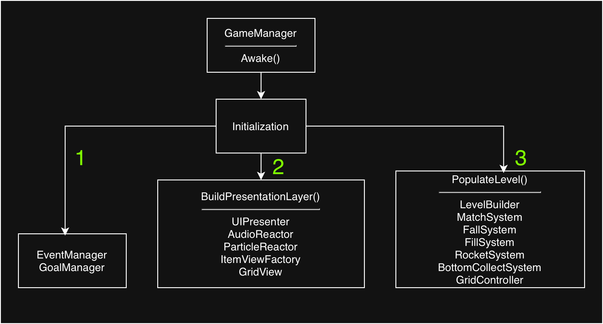
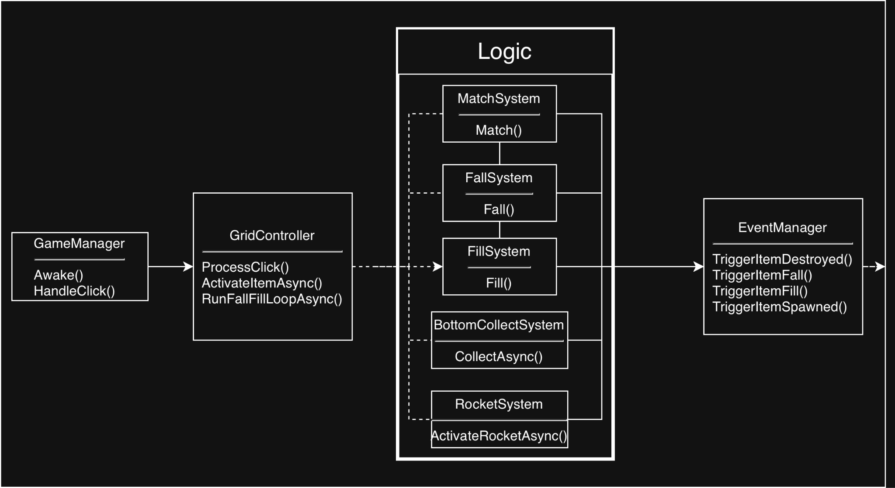

How to Create Code Structure for Match-2 Game
İçindekiler
1.Design Pattern and Code Architecture 2
1.1.1.5 Builders & Factories 3
1.1.3 Managers & Controllers 4
1.1.5 Algorithm & Enums & Utils 5
1.3 Core Mechanics & Algorithms 7
1.3.1 GridController.ProcessClick() 7
1.3.2 MatchSystem & MatchFinder 8
1.3.6 Goal & Spawn-Quota System 9
2. Data Structures (Geliştirilebilirlik) 10
1.Design Pattern and Code Architecture
Kod yapısı tasarlanırken, Separation of Concerns ilkesine uygulanmalıdır. Kod yapısı kurulurken Logic ve View olarak iki ana katmana ayrılmalı ve bu katmanlar arası iletişim Event yapılarıyla kurulmalıdır. Belli durumlarda farklı design patternler kullanılmakla beraber genel yapı yoğunlukla MVC/MVP mimarisine uyacak şekilde yazılmış bir kod dizini oluşturulmalıdır. Logic katmanı yazılırken saf C# kullanılmalı ve UnityEngine tarafından izole edilmelidir. View tarafında ise MonoBehaviour class yapısı kullanılarak oyuncunun ekranda göreceği görsel katman oluşturulmalıdır. Bu iki yapı birbirine Controller/Presenter yapılarıyla bağlanmalıdır. Data akışını daha detaylı anlayabilmek açısından dosya yapısı ve scriptlerin açıklaması aşağıda yapılmıştır.
1.1. Folder Yapısı
1.1.1 Logic
Logic katmanının dosya yapısı Grid, Items, Logic Interfaces, Systems ve Builders&Factories olarak beşe ayrılmıştır.
1.1.1.1 Grid
- GridPosition: bir struct yapısı olup, oyun esnasında Grid üzerindeki pozisyonların rahatça bulunabilmesi ve işlem yapılabilmesi için yazılmıştır.
- Cell: Bu class Grid üzerindeki her ayrı cell’i temsil etmek için yazılmış olup, içinde GridPosition değeri, içindeki Item type ve Neighbors listesi bulunmaktadır.
- Grid: Her level için verilen row ve column değerlerine göre içinde bir Cell yapısı tutan bir cells matrisi bulundurur.
1.1.1.2 Items
Bu dosyada Cube, Duck, Balloon, ColoredBalloon, Box, ve Rocket classları bulunmaktadır. Bu class’ların hepsi ortak olarak IGridItem interface’ini kullanmakla beraber, farklı interface’lere sahip olarak farklı variable veya method’lara sahip olabilirler.
1.1.1.3 Logic Interfaces
Bu folderda IBottomCollectable, IColored, IDamageable, IFallable, IFlyableToGoal, IGridItem, ve IMatchable interface’leri bulunmaktadır. Bu interface’ler belli özellikleri itemler arasında dağıtmakta kullanılmıştır. ( örn. Duck class’ı IBottomCollectable interface’ine sahiptir fakat IColored interface’ine sahip değildir.)
Aynı zamanda IFallSystem, IFillSystem, IMatchSystem, IMatchFinder, IBottomCollect, IRocketSystem interface’leri bulunur ve dependency injection amacıyla kullanılmaktadırlar.
1.1.1.4 Systems
Bu folderda FallSystem, FillSystem, MatchSystem, RocketSystem, BottomCollectSystem olarak 5 class yapısı bulunmaktadır. Buradaki her class ismiyle belirtilen sistemleri logic tarafında kontrol etmekle görevlidir.
1.1.1.5 Builders & Factories
- ItemFactory: Logic tarafındaki item nesnelerinin (Cube, Rocket vb.) yaratılmasından sorumlu static bir class'tır. CreateRandomCube() ve CreateRocket() gibi fonksiyonların yanında, Fill işleminde çağrılan CreateRandomItem() fonksiyonu bir fabrika görevi görmektedir.
- LevelBuilder: Oyun başında LevelData içindeki dizilime göre Grid'in kurulmasından sorumludur.
1.1.2 View
1.1.2.1 Grid
Bu Folder’da GridView, ItemView, ve RocketView olmak üzere 3 class bulunmaktadır.
- GridView: Logic katmanında gerçekleşen olayları event’ler aracılığıyla dinleyerek grid üzerindeki görsellerin ne tepkiler vereceğini yönetir.
- ItemView: Grid üzerinde bulunan taşların sahnedeki karşılığını temsil eder ve ItemViewPrefab objesinde bulunur. Objelerin yapacağı animasyonları organize etmekle görevlidir.
- RocketView: ItemView class’ından inherit alır, ve Rocket’in görsel yapısı diğer itemlerden farklı olduğu için sahnedeki Rocket’in animasyon yapılarını organize eder.
1.1.2.2 UI
- UIPresenter: Oyunun Goal UI’larının oluşumunu sağlar, ve ayrıca grid’deki goal itemler’in hangi yere uçacağı bilgisini GridView’a sağlamakla görevlidir.
- GoalUIItem: Ekranda görsel olarak görünen goalUIPrefab’ının sahip olduğu class yapısıdır. Bu prefabın oyun esnasında verdiği tepkileri ve animasyonları uygulamakla görevlidir.
- GoalFlyTarget: Bir struct yapısı olup goalUIPrefab’ın position ve scale bilgisini tutar.
1.1.2.3 FeedBack
- Particle Reactor: Kendisine gelen eventleri dinleyerek sahnede particle effect’leri üretmekle görevlidir.
- ParticleEffect: Sahnede yaratılan particle effect’lerin animasyonlarını yönetmekle görevlidir.
- AudioReactor: Kendisine gelen eventleri dinleyerek doğru sesleri çalmakla görevlidir.
1.1.2.4 Infrastructure
- ItemViewFactory: Ekranda gözüken görsellere sahip objelerin doğru eventler sonucu yaratılmasıyla görevlidir.
- ItemPool: Oyunda kullanılan item prefablarının bir pool sisteminde toplanıp sürekli bir Instantiate/Destroy döngüsünün önüne geçmekle görevlidir.
1.1.3 Managers & Controllers
- GameManager: Bir Composition Root görevi görmekle birlikte kendine gelen eventler sonucu oyuncunun tıklamalarını yönetir.
- GridController: Logic tarafında kurulan Match/Fall/Fill işlemlerini asenkron yapılarla yöneterek birbirine bağlayan sistemdir. Oyunun akışını yönetir.
- GoalManager: Oyunun goal, moves, gibi değerlerini tutarak Logic katmanında gerçekleşen olaylara göre bunları düzenler.
- InputManager: Oyuncudan gelen tıklamaları ekran pozisyonundan dünya pozisyonuna çevirerek sisteme verir.
- EventManager: Logic katmanı ve View katmanının birbirlerine referans vermeden data akışı sağlamasına imkan tanır.
1.1.3.1 Manager Interfaces
Manager sınıflarının diğer katmanlarla haberleşirken kullandığı interface’lerin bulunduğu dosyadır.
1.1.4 ScriptableObjects
1.1.4.1 Data & Database
Bu klasörde oyunun genel ayarları, level yapıları ve veri tabanları tutulmaktadır.
- LevelData: Hem goal, moves, rows, columns gibi değerleri tutmakla beraber Editör kodları sayesinde Inspector’dan grid dizilimi yapmamızı sağlayan bir gridLayout listesi tutar.
- GameSettingsData: Oyunda gerçekleşen animasyon, cell genişliği, grid yerleşimi gibi konularda kullanılan parametreleri değiştirilebilir kılar.
- AudioDatabase: Oyunda kullanılan seslerin datasını tutar.
- ItemDatabase: Her item oluşturduğumuzda bunu inspector’dan koda atmak yerine bu data içinden tutulmasını sağlar. ItemDefinition scriptableObject datası kabul eden bir List tutar.
1.1.4.2 Item Definitions
- Item Definition: ItemDefinition scriptableObject’i oluşturulan itemler için Color, Sprite, Prefab gibi değişkenleri tutmamızı ve bu item’lerin creation logiclerini belirler.
Her objenin definition’ı için ItemDefinition’dan inherit alan yeni bir class oluşturulur. Ekstra bir method veya override edilmesi gereken bir method varsa burda tanımlanır.
1.1.5 Algorithm & Enums & Utils
Bu klasörde ortak hesaplamalar, algoritmalar ve enum yapıları tutulmaktadır.
- MatchFinder: Logic tarafındaki MatchSystem tarafından çağırılan ve BFS algoritması kullanarak match gruplarını bulmayı sağlayan methodu tutar.
- Utils: Belli yardımcı, matematiksel veya Unity bazlı dönüşüm, fonksiyonları tutan static class tipidir.
- Enums: ItemColor, RocketOrientation, DamageType enum’ları belli sabit tipleri sınıflandırmaya yararlar.
1.2 Data Flow
Oyunun başlangıcında GameManager Awake() fonksiyonunun içinde oyunun injection yapısını kurar ve gerekli fonksiyonları başlatarak sahnenin kurulmasını sağlar. GameManager.Awake() içindeki dependency injection sistemi aşağıda gösterilen şekilde ve sırayla gerçekleşmektedir.

GameManager aynı zamanda HandleClick() fonksiyonu ile InputManager’dan gelen event’i dinleyerek GridController’ın içindeki mantığı çalıştırır. Sistem akışı aşağıda gösterildiği gibi gerçekleşmektedir.

GridController’ın sahip olduğu ProcessClick() fonksiyonu kullanılarak kullanıcın yaptığı tıklama işleme alınır ve bunlar sonucunda belli eventler ateşlenir. Sonrasında bu eventlere bağlı observerlar gerekli işlemleri görsel taraf için gerçekleştirir. Logic tarafının View tarafına iletilip gerekli işlemlerin yapılması aşağıda gösterildiği gibi gerçekleşmektedir.

1.3 Core Mechanics & Algorithms
1.3.1 GridController.ProcessClick()
Oyuncunun tıklaması sonrası GridController’daki ProcessClick() fonksiyonunun çalışması ile Gridin buna ne tepki vereceği hesaplanır. ProcessClick() fonksiyonu asenkron void bir fonksiyon olup, oyunun ana döngüsü işler. ProcessClick() fonksiyonu adım adım aşağıda anlatılan şekilde çalışmaktadır:
- Fonksiyonun başlangıcında delegate injection methodu kullanılarak ignoredItems listesi view tarafından çekilir. Bu listeye ihtiyacımızın olmasının sebebi, gridde herhangi bir işlem sonrası hareket halinde olan ve animasyonunu daha bitirmemiş itemleri match hesaplamalarından çıkartmaktır.
- Sonrasında kullanıcı tarafından verilen input’un grid’in üzerinde olup olmadığı, hareket eden bir iteme tıklanıp tıklanmadığı kontrolü CanProcessClick() çağırısı ile yapılır.
- Fall ve Fill işlemlerinde tüm tahtayı taramak yerine column bazlı bir kontrol yapmak açısından affectedColumn listesi yaratılır ve bi kontrol bloğu başlar.
- Sistem bir try bloğuna girerek ActivateItemAsync() fonksiyonunu çağırır. Bu method bir if-else bloğu içinde tıklanan objenin Rocket olup olmadığını kontrol eder.
- Eğer Rocket ise RocketSystem.ActivateRocketAsync() methodu çalıştırılır. Bu method rocketlerin griddeki başka rocketleri de tetikleyebileceği asenkron bir yapıda çalışır. Eğer rocketlerin birbirini tetiklediği bir durum ortaya çıkarsa eventler aracılığıyla GridController’daki HandleChainReaction() methodununun akışı yönetmesi sağlanır.
- Eğer değil ise MatchSystem.Match() fonksiyonunu çağırır. Bu fonksiyon MatchFinder.FindMatch() yardımcı fonksiyonunu çağırarak affectedColumns, ve WillSpawnRocket parametrelerini döner.
- try döngüsünden çıktıktan sonra elindeki affectedColumn listesi dolu olduğu sürece RunFallFillLoopAsync() fonksiyonunu çağırır. Bu fonksiyonun içi bir do-while döngüsü içerir. Bu döngü affectedColumn listesi dolu olduğu sürece çalışır. Bunun sebebi her fall/fill işleminden sonra BottomCollectSystem.CollectAsync() fonksiyonu çağırılır. Bu fonksiyon match işleminden etkilenen sütunlardaki fall/fill işlemleri bittikten sonra o sütunlarıni en alt satırındaki item’e bakarak bunun ördek olup olmadığını kontrol eder. Ördek ise geliştirici tarafından belirlenen bir delay süresince Ördek’ler toplanır ve fonksiyonun sonucunda tekrardan etkilenen sütunlar var ise return edilir ve do-while döngüsünün çalışması sağlanır.
Note: Bunun yapılmasının sebebi Grid’in görsel akışını kontrol edebilmek içindir. Toon Blast oyunu izlendiğinde power-up oluşma ve rocket kullanma işlemlerinde oyuncu tıklamalarının kapatıldığı gözlenmiştir. Bu sebeple bu case çalışmasında Rocket oluşum ve kullanılma işlemlerinde grid’in kontrolüne hakim olabilmek için activeActionCount parametresi kullanılmıştır. Bu parametre ile eğer grid’de o an herhangi özel bir işlem var ise isGlobalLock boolean’ının takibi ile oyuncu inputları kabul edilmez.
1.3.2 MatchSystem & MatchFinder
1.3.2.1 MatchSystem
MatchSystem, içindeki Match() fonksiyonunda MatchFinder.FindMatch() fonksiyonunu çağırıp eşleşen küpleri aldıktan sonra gerekli kontrolleri yapar. Bu kontroller sonucu ClearMatchCells() ve DamageNeighbors() fonksiyonlarını çağırır. ClearMatchCells() match’in koşuluna göre itemler yok etmek veya merge etmek için eventleri tetikler. DamageNeigbors() methodu eşleşen gruptaki cell’lerin komşularına bakar ve eğer IDamageable interface’ine sahip bir obstacle var ise ona hasar verir ve gerekli eventleri tetikler.
1.3.2.2 MatchFinder
MatchFinder Class’ı istenen match durumunu bulmak için HashSet ve Queue collection’ları kullanan bir Breadth-First-Search algoritmasına sahiptir. Cell classlarından oluşan Queue collection’ı tıklanan Cell queue’ye eklendikten sonra bu liste sıfırlanana kadar while döngüsü içinde arama yapar. Bu yapı sıradaki hücreyi çekip onun komşularına bakarak aynı renkli bir eşleşme bulup bulmadığına bakar ve bunları matchedCells listesine ekler. Uğradığı pozisyonlara tekrar uğramamak için ziyaret edilen Cell’leri bir HashSet yapısı olan visited collection’ına ekler. Bakılan hücrenin komşularından eşleşme sağlayan Cell’ler queue’ye eklenerek while döngüsünün devamlılığı sağlanır.
1.3.3 Fall & Fill Systems
1.3.3.1 Fall System
FallSystem class’ı içinde yalnızca bir Fall() fonksiyonu bulundurur. Fall() fonksiyonu affectedColumns parametresi alır ve etkilenen column’larda foreach döner. Döngüye giren sütun en aşağıdaki row’dan başlanarak taranırken two-pointer yöntemi kullanılır.
1.3.3.2 Fill System
FillSystem Fill() fonksiyonu en üst satırdan başlayarak verilen sütunu aşağıya doğru bir foreach içinde döner ve dolu bir hücre bulana kadar bulduğu Cell’ler için Fill işlemini gerçekleştirir. Fill işleminde gerekli random itemler yaratılır ve TriggerItemFill eventi tetiklenir.
1.3.4 RocketSystem
RocketSystem’in içindeki ActivateRocketAsync() methodu ile rocket’in hareketini gerçekleştirir. bir distance parametresi ve GridPosition[] activeDirections listesi ile Cell’leri tek tek iki yönde ilerler. Task.Delay() yapısı sayesinde her Cell taramasından sonra designer tarafından GameSettings’de verilen süre kadar bekler. Geçtiği her hücrede ApplyDamage() methodunu uygular. Bu method sayesinde eğer geçtiği hücre’de Rocket varsa chain reaction başlatabilir ve item’lere hasar verebilir. RocketSystem’in içinde bulunan SpawnRocketAsync() fonksiyonu gerekli şartlar sağlandığında Rocket oluşumunu yürürtmek için GridController tarafından çağırılır.
1.3.5 BottomCollectSystem
BottomCollectSystem Class’ının içinde asenkron çalışan CollectAsync() methodu Duck gibi en alt row’a düşünce toplanan itemleri toplamakta kullanılır. Sütunun en aşağı noktasındaki item kontrol edilir ve eğer item IBottomCollectable ise item toplanır. Animasyonlarla tutarlı bir işlem olabilmesi için GameSettings’de belirlenen süre kadar Task.Delay() aracılığıyla işlemler geciktirilir.
1.3.6 Goal & Spawn-Quota System
GoalManager class’ı level için verilen Moves ve Goals değerlerinin işlenmesinden sorumludur. Toon Blast oyunu incelendiğinde IFallable objelerin eğer istenen goal miktarı grid’de bulunan miktarından az ise Fill işlemine eklendiği görülmüştür. Bu sebeple Initialize() fonksiyonunu içinde LevelData’da verilen TargetAmount ile o an tahtada bulunan miktarının karşılaştırılması sonucu; eğer IFallable ise grid’de eksik olan kadar bir kota oluşturulup CreateRandomItem() çağrısına verilir; eğer IFallable değil ise TargetAmount grid üzerindeki sayısına eşitlenir.
1.4 View Layer
View katmanında oyuncunun gördüğü item ve grid animasyonları ana olarak GridView ve ItemView kodları üzerinden yapılmaktadır.
- GridView: Grid üzerinde gerçekleşen animasyon olaylarını event-driven bir şekilde yürütmekle görevlidir. GridView viewDictionary adında IGridItem ve ItemView ikililerini tutan bir collection yapısı barındırır. Bu yapı o an sahnede bulunan item’lerin datasını tutar ve Logic layer’ıyla tutarlı olacak şekilde animasyonları oynatır. Aynı zamanda animatingItems adında bi HashSet collection’ı tutarak o an grid’de hareket halindeki item’leri saklar. GameManager GridController’u oluşturulurken dependency injection yöntemiyle gridView’ın GetAnimatingItems() fonksiyonunu GridController’a delegate olarak verir ve bu fonksiyon animatingItems’i return eder. Bunun dışında Grid oluşumunda borders scaling işlemini, gridin konumlanması ve camera’nın orthographic size’ını ayarlanmasını gerçekleştirir.
- ItemView: Grid üzerinde bulunan itemlerin sahnedeki görsel karşılığını temsil eder ve ItemViewPrefab objesinde bulunur. GridView tarafından çağırılan animasyon fonksiyonlarını bir queue yapısında tutarak sırayla oynatılmasından görevlidir. İçerisinde IsAnimating parametresi taşır ve değişimler OnAnimationStateChanged event’ine bildirilmesi ile animatingItems collection’ında kullanılır.
- RocketView: ItemView class'ından inherit alır ve RocketPrefab’ında bulunur. Rocket animasyonları diğer Item animasyonlarından farklı olduğu için belli method’lar ovverride edilerek kullanılır.
2. Data Structures (Geliştirilebilirlik)
Oyunun data yapısı ScriptableObject yapısı kullanılarak kurulmuş olup üstüne eklenebilir bir yapı inşa edilmiştir. Oyuna yeni bir item türü eklemek için ItemDefinition abstract class’ından inherit alan bir definition scripti yazılarak yaratılacak itemin Logic type, Sprite, Prefab, ColoredSprite gibi parametrelerini tutar ve iki kısmı birbirine bağlar. ItemDefinition tipinde bir liste tutan ItemDatabase class’ıyla da yeni yaratılan itemler tek bi alanda toplanır, ve oyun kod yapısını oluşturulan ItemDatabase yapısı referans verilir.
GameSettingsData class’ı da scriptableObjects türünde yaratılmış olup içerisinde kodların birçok yerinde kullanılan ve animasyon zamanlaması, delay zamanlaması, fall hızı… gibi ortak değerleri tutar ve bu değerlerin editörden değiştirilmesine olanak verir.
LevelDataEditor, LevelData class’ında tutulan gridLayout listesininin Unity Editor’de 2 boyutlu matris yapısında görünmesini sağlar. Ayrıca istenilen Cell’lere itemlerin yerleştirilebilmesini sağlar.